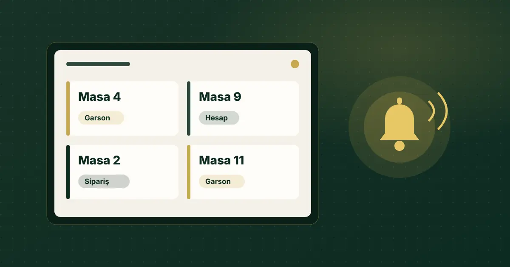

Garson Çağırma Sistemi: QR ile Masadan Servis Talebi Nasıl Yönetilir?
Yoğun saatte el kaldıran misafiri fark etmek zordur. QR tabanlı çağrı, talebi masa bilgisiyle bir ekrana düşürür; ama asıl işi o ekranı kimin, nasıl izlediği belirler.

Kısa cevap
Garson çağırma sistemi, misafirin masadan bir butona veya QR menüdeki bir düğmeye dokunarak personele haber vermesini sağlar. QR tabanlı sistemde talep, masa bilgisiyle birlikte personelin izlediği bir servis paneline düşer; personel talebi görüp karşılar.
Garson çağırma sistemi neden gerekir?
Yoğun saatte garsonun dikkati sipariş taşımak, masa toplamak ve mutfakla konuşmak arasında bölünür. El kaldıran misafiri fark etmek gecikebilir; misafir de birini yakalamak için beklemek zorunda kalır. Çağrı sistemi bu talebi görünür bir kayda çevirir: hangi masa, ne istedi, ne zaman istedi.
Hangi türleri var?
Masa üstü çağrı butonu
Masaya konan kablosuz bir buton, bir ekrana veya personelin bilekliğine sinyal gönderir. Kurulumu fiziksel cihaz gerektirir; pil, kayıp ve temizlik konularını yönetmeniz gerekir. Genelde yalnızca "çağrı" bilgisini iletir.
QR menü üzerinden çağrı
Misafir zaten açtığı dijital menüdeki "Garson çağır" veya "Hesap iste" düğmesine dokunur. Ek cihaz yoktur; talebin hangi masadan geldiği masa bazlı karekoddan bilinir. Aynı ekranda sipariş ve hesap talebi de toplanabilir.
| Konu | Fiziksel buton | QR menü çağrısı |
|---|---|---|
| Donanım | Masa başına cihaz | Basılı masa kodu yeterli |
| Talep türü | Çoğunlukla tek tip çağrı | Garson, hesap, sipariş ayrımı yapılabilir |
| Misafirin telefonu | Gerekmez | Gerekir |
| Kayıt | Sisteme göre değişir | Panelde talep listesi tutulur |
Her işletme için tek doğru yoktur. Misafir profilinizde telefon kullanmak istemeyenler çoksa fiziksel yöntem ya da klasik servis ön planda kalmalıdır.
QR ile garson çağrısı nasıl çalışır?
- Her masaya kendi karekodu konur.
- Misafir kodu okutur; menü masa bilgisiyle açılır.
- Misafir "Garson çağır" veya "Hesap iste" der.
- Talep, masa numarasıyla servis paneline kart olarak düşer.
- Personel talebi görür, masaya gider ve kartı kapatır.
QR Menu Official'da bu akış Pro paketten itibaren gelir: Servis Paneli sipariş, garson çağrısı ve hesap taleplerini aynı ekranda masa bilgisiyle gösterir; sesli uyarı ve masaüstü bildirimi verebilir. Hesap talebi ödeme almaz; yalnızca hesabın masaya getirilmesi isteğini iletir.
Asıl iş: paneli kim izleyecek?
Çağrı sistemi kendi başına servis yapmaz. Talep ekrana düşer; onu fark edecek bir insan gerekir. Kurulumdan önce şu soruları cevaplayın:
- Ekran nerede duracak? Bar, kasa veya pass bölümü gibi personelin sık baktığı bir noktada olmalı.
- Sesli uyarı duyulabilir mi? Mutfak ve müzik gürültüsünü hesaba katın.
- Kim sorumlu? Bölge bazlı mı, sıradaki boş garson mu? Kural belirsizse talep "herkesin işi" olup kimsenin işi olmaz.
- Talep ne zaman kapanır? Personel masaya gittiğinde kapatılmalı; açık kalan kartlar ekranı anlamsızlaştırır.
Personel erişimi nasıl ayarlanmalı?
Garson veya mutfak personelinin menü fiyatlarını ya da işletme ayarlarını görmesine gerek yoktur. Sınırlı bir servis rolü, yalnızca paneli görür. QR Menu Official'da garson ve mutfak için bu tür bir rol bulunur; bu rolle giren kullanıcı menüyü ve ayarları görmez.
Masa dışından çağrı yapılabilir mi?
Masa karekodunun fotoğrafı başka yerden okutulursa ne olur? Bu, QR tabanlı sistemlerde sorulması gereken doğru bir sorudur. QR Menu Official'da karekod okutulduğunda imzalı ve süresi sınırlı bir masa oturumu başlar; süre ve hareketsizlik limitini işletme belirler. Bu, riski azaltan bir önlemdir; gerçek bağlantıya sahip birinin erişimini tamamen engellediği iddia edilemez. Ayrıntılar Masa Oturum Güvenliği sayfasında.
Kurulum öncesi kontrol listesi
- Masa listesini çıkarın ve numaraları fiziksel masalarla eşleştirin.
- Panelin duracağı cihazı ve konumunu belirleyin.
- Sesli uyarıyı servis saatinde test edin.
- Kimin hangi talebi karşılayacağını yazılı kurala bağlayın.
- Personele paneli 10 dakikalık bir provayla gösterin.
- İlk haftada açık kalan talepleri ve misafir geri bildirimini izleyin.
Masa kodlarının nasıl hazırlanacağını QR menü rehberinde anlattık.
Garson çağrısı ve hesap talebinin panele nasıl düştüğünü görün. Pro ve Plus demo menülerinde deneyebilirsiniz.
Canlı Menüyü GörSık sorulan sorular
Garson çağırma sistemi için ek donanım gerekir mi?
Fiziksel buton sistemlerinde evet. QR tabanlı sistemlerde masa başına basılı karekod ve personelin izleyeceği bir ekran (bilgisayar, tablet veya telefon) yeterlidir.
Hesap iste düğmesi ödeme alır mı?
QR Menu Official'da hayır. Hesap talebi yalnızca hesabın masaya getirilmesi isteğini servis paneline iletir; ödeme tahsil edilmez.
Çağrılar personele nasıl bildirilir?
Talep servis paneline masa bilgisiyle kart olarak düşer. Panel sesli uyarı ve masaüstü bildirimi verebilir.
Garsonlar menü fiyatlarını değiştirebilir mi?
Sınırlı servis rolüyle giren personel yalnızca servis panelini görür; menüyü ve ayarları göremez.
Hangi pakette garson çağrısı var?
QR Menu Official'da garson çağrısı, hesap talebi ve servis paneli Pro paketten itibaren sunulur.
Kaynaklar
- QR Menu Official — Servis Paneli modül sayfası
- MDN — Notifications API
- T.C. Ticaret Bakanlığı — Fiyat etiketinde yeni dönem başlıyor
Son kontrol: 30 Ekim 2026. Yazıda yer alan ürün özellikleri QR Menu Official'ın mevcut paket içeriğiyle sınırlıdır.